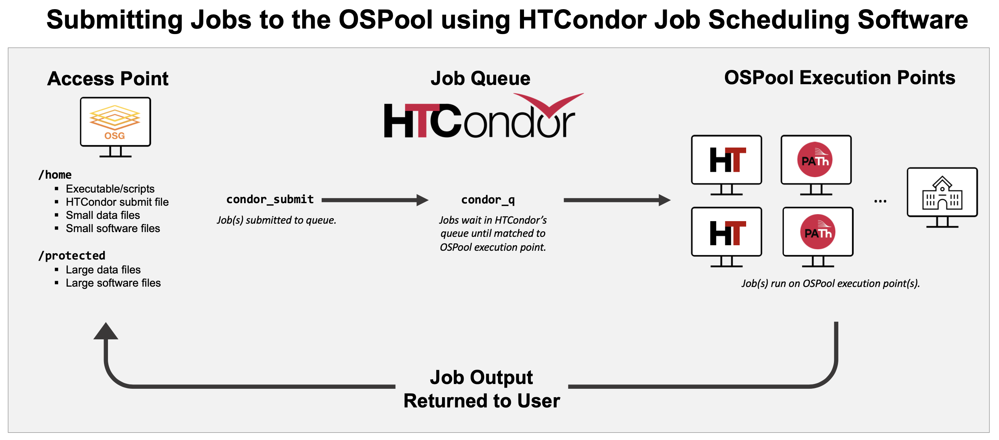

Overview: Submit Jobs to the OSPool using HTCondor¶
Purpose¶
This guide discusses the mechanics of creating and submitting jobs to the OSPool using HTCondor.
OSPool Workflow Overview¶
The process of running computational workflows on OSG resources follows the following outline:

Terminology:
- Access point is where you login and stage your data, executables/scripts, and software to use in jobs.
- HTCondor is a job scheduling software that will run your jobs out on the OSPool execution points. All jobs must be submitted to HTCondor to run out on the OSPool.
- The Open Science Pool (OSPool) is the set of resources your job runs on. It is composed of execution points, as well as other technologies, that compose the cpus, memory, and disk space that will run the computations of your jobs.
Run Jobs on the OSPool using HTCondor¶
We are going to run the traditional 'hello world' program with a OSPool twist. In order to demonstrate the distributed resource nature of OSPool HTC System, we will produce a 'Hello CHTC' message 3 times, where each message is produced within is its own 'job'. Since you will not run execution commands yourself (HTCondor will do it for you), you need to tell HTCondor how to run the jobs for you in the form of a submit file, which describes the set of jobs.
Note: You must be logged into an OSPool Access Point for the following example to work.
1. Prepare an executable¶
First, create the executable script you would like HTCondor to run. For our example, copy the text below and paste it into a file called hello-ospool.sh (we recommend using a command line text editor) in your home directory.
#!/bin/bash
#
# hello-ospool.sh
# My very first OSPool job
#
# print a 'hello' message to the job's terminal output:
echo "Hello OSPool from Job $1 running on `whoami`@`hostname`"
#
# keep this job running for a few minutes so you'll see it in the queue:
sleep 180
This script would be run locally on our terminal by typing hello-ospool.sh <FirstArgument>. However, to run it on the OSPool, we will use our HTCondor submit file to run the hello-ospool.sh executable and to automatically pass different arguments to our script.
2. Prepare a submit file¶
Create your HTCondor submit file, which you will use to tell HTCondor what job to run and how to run it. Copy the text below, and paste it into file called hello-ospool.sub. This is the file you will submit to HTCondor to describe your jobs (known as the submit file).
# hello-ospool.sub
# My very first HTCondor submit file
# Specify your executable (single binary or a script that runs several
# commands) and arguments to be passed to jobs.
# $(Process) will be a integer number for each job, starting with "0"
# and increasing for the relevant number of jobs.
executable = hello-ospool.sh
arguments = $(Process)
# Specify the name of the log, standard error, and standard output (or "screen output") files. Wherever you see $(Cluster), HTCondor will insert the
# queue number assigned to this set of jobs at the time of submission.
log = hello-ospool_$(Cluster)_$(Process).log
error = hello-ospool_$(Cluster)_$(Process).err
output = hello-ospool_$(Cluster)_$(Process).out
# This lines *would* be used if there were any other files
# needed for the executable to use.
# transfer_input_files = file1,/absolute/pathto/file2,etc
# Specify Job duration category as "Medium" (expected runtime <10 hr) or "Long" (expected runtime <20 hr).
+JobDurationCategory = "Medium"
# Tell HTCondor requirements (e.g., operating system) your job needs,
# what amount of compute resources each job will need on the computer where it runs.
requirements = (OSGVO_OS_STRING == "RHEL 9")
request_cpus = 1
request_memory = 1GB
request_disk = 5GB
# Tell HTCondor to run 3 instances of our job:
queue 3
By using the "$1" variable in our hello-ospool.shexecutable, we are telling HTCondor to fetch the value of the argument in the first position in the submit file and to insert it in location of "$1" in our executable file.
Therefore, when HTCondor runs this executable, it will pass the $(Process) value for each job and hello-ospool.sh will insert that value for "$1" in hello-ospool.sh.
More information on special variables like "$1", "$2", and "$@" can be found here.
Additionally, the JobDurationCategory must be listed anywhere prior to the final ‘queue’ statement of the submit file, as below:
+JobDurationCategory = “Medium”
| JobDurationCategory | Expected Job Duration | Maximum Allowed Duration |
|---|---|---|
| Medium (default) | <10 hrs | 20 hrs |
| Long | <20 hrs | 40 hrs |
If the user does not indicate a JobDurationCategory in the submit file, the relevant job(s) will be labeled as Medium by default. Batches with jobs that individually execute for longer than 20 hours are not a good fit for the OSPool. We encourage users with long jobs to implement self-checkpoint when possible.
Why Job Duration Categories?
To maximize the value of the capacity contributed by the different organizations to the OSPool, users are requested to identify a duration categories for their jobs. These categories should be selected based upon test jobs (run on the OSPool) and allow for more effective scheduling of the capacity contributed to the pool.
Every job submitted from an OSG-managed access point must be labeled with a Job Duration Category upon submission. By knowing the expected duration, the OSG is working to be able to direct longer-running jobs to resources that are faster and are interrupted less, while shorter jobs can run across more of the OSPool for better overall throughput.
Jobs with single executions longer than 20 hours in tests on the OSPool should not be submitted, without self-checkpointing.
3. Submit the job¶
Now, submit your job to HTCondor’s queue by using the command condor_submit and providing the name of the submit file you created above:
[alice@ap40]$ condor_submit hello-ospool.sub
The condor_submit command actually submits your jobs to HTCondor. If all goes well, you will see output from the condor_submit command that appears as:
Submitting job(s)...
3 job(s) submitted to cluster 36062145.
4. Check the job status¶
To check on the status of your jobs in the queue, run the following command:
[alice@ap40]$ condor_q
The output of `condor_q` should look like this:
-- Schedd: ap40.uw.osg-htc.org : <128.104.101.92:9618?... @ 04/14/23 15:35:17
OWNER BATCH_NAME SUBMITTED DONE RUN IDLE TOTAL JOB_IDS
Alice ID: 3606214 4/14 12:31 2 1 _ 3 36062145.0-2
3 jobs; 2 completed, 0 removed, 0 idle, 1 running, 0 held, 0 suspended
By default, condor_q shows jobs grouped into batches by batch name (if provided), or executable name. To show all of your jobs on individual lines, add the -nobatch option.
To see a live update of the status of your jobs, use the command condor_watch_q. (To exit the live view, use the keyboard shortcut Ctrl+C.)
5. Examine the results¶
When your jobs complete after a few minutes, they'll leave the queue. If you do a listing of your /home directory with the command ls -l, you should see something like:
[alice@submit]$ ls -l
total 28
-rw-r--r-- 1 alice alice 0 Apr 14 15:37 hello-ospool_36062145_0.err
-rw-r--r-- 1 alice alice 60 Apr 14 15:37 hello-ospool_36062145_0.out
-rw-r--r-- 1 alice alice 0 Apr 14 15:37 hello-ospool_36062145_0.log
-rw-r--r-- 1 alice alice 0 Apr 14 15:37 hello-ospool_36062145_1.err
-rw-r--r-- 1 alice alice 60 Apr 14 15:37 hello-ospool_36062145_1.out
-rw-r--r-- 1 alice alice 0 Apr 14 15:37 hello-ospool_36062145_1.log
-rw-r--r-- 1 alice alice 0 Apr 14 15:37 hello-ospool_36062145_2.err
-rw-r--r-- 1 alice alice 60 Apr 14 15:37 hello-ospool_36062145_2.out
-rw-r--r-- 1 alice alice 0 Apr 14 15:37 hello-ospool_36062145_2.log
-rw-rw-r-- 1 alice alice 241 Apr 14 15:33 hello-ospool.sh
-rw-rw-r-- 1 alice alice 1387 Apr 14 15:33 hello-ospool.sub
Useful information is provided in the user log, standard error, and standard output files.
HTCondor creates a transaction log of everything that happens to your jobs. Looking at the log file is very useful for debugging problems that may arise. Additionally, at the completion of a job, the .log file will print a table describing the amount of compute resources requested in the submit file compared to the amount the job actually used. An excerpt from hello-ospool_36062145_0.log produced due the submission of the 3 jobs will looks like this:
…
005 (36062145.000.000) 2023-04-14 12:36:09 Job terminated.
(1) Normal termination (return value 0)
Usr 0 00:00:00, Sys 0 00:00:00 - Run Remote Usage
Usr 0 00:00:00, Sys 0 00:00:00 - Run Local Usage
Usr 0 00:00:00, Sys 0 00:00:00 - Total Remote Usage
Usr 0 00:00:00, Sys 0 00:00:00 - Total Local Usage
72 - Run Bytes Sent By Job
265 - Run Bytes Received By Job
72 - Total Bytes Sent By Job
265 - Total Bytes Received By Job
Partitionable Resources : Usage Request Allocated
Cpus : 0 1 1
Disk (KB) : 118 1024 1810509281
Memory (MB) : 54 1024 1024
Job terminated of its own accord at 2023-04-14T17:36:09Z with exit-code 0.
And, if you look at one of the output files, you should see something like this:
Hello OSPool from Job 0 running on alice@e389.chtc.wisc.edu.
Congratulations. You've run your first jobs in the OSPool!
Important Workflow Elements¶
A. Removing Jobs
To remove a specific job, use condor_rm <JobID, ClusterID, Username>. Example:
[alice@ap40]$ condor_rm 845638.0
B. Importance of Testing & Resource Optimization
-
Examine Job Success Within the log file, you can see information about the completion of each job, including a system error code (as seen in "return value 0"). You can use this code, as well as information in your ".err" file and other output files, to determine what issues your job(s) may have had, if any.
-
Improve Efficiency Researchers with input and output files greater than 1GB, should store them in their
/protecteddirectory instead of/hometo improve file transfer efficiency. See our data transfer guides to learn more. -
Get the Right Resource Requests Be sure to always add or modify the following lines in your submit files, as appropriate, and after running a few tests.
| Submit file entry | Resources your jobs will run on |
|---|---|
| request_cpus = cpus | Matches each job to a computer "slot" with at least this many CPU cores. |
| request_disk = kilobytes | Matches each job to a slot with at least this much disk space, in units of KB. |
| request_memory = megabytes | Matches each job to a slot with at least this much memory (RAM), in units of MB. |
Determining Memory and Disk Requirements. The log file also indicates how much memory and disk each job used, so that you can first test a few jobs before submitting many more with more accurate request values. When you request too little, your jobs will be terminated by HTCondor and set to "hold" status to flag that job as requiring your attention. To learn more about why a job as gone on hold, use condor_q -hold.
When you request too much, your jobs may not match to as many available "slots" as they could otherwise, and your overall throughput will suffer.
You Have the Basics, Now Run Your OWN Jobs¶
Check out the HTCondor Job Submission Intro video, which introduces various ways to specify differences between jobs (e.g. parameters, different input filenames, etc.), ways to organize your data, etc. and our full set of OSPool User Guides to begin submitting your own jobs.